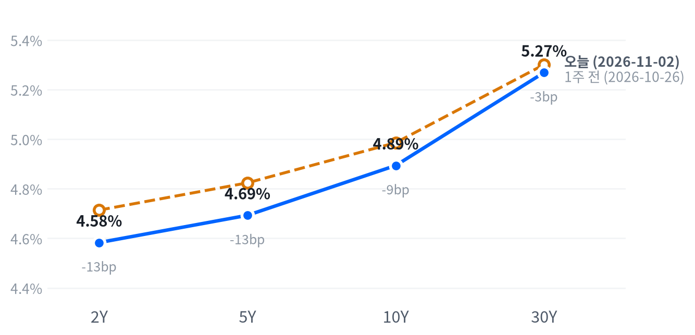

이란이 호르무즈 재개 조건을 내놓았다는 보도에 유가가 급락해 다우와 경기소비재·금융은 올랐지만, 마벨의 루멘텀 인수와 키옥시아 가이던스가 겹친 반도체·하드웨어 매도가 장 초반 상승을 지웠다. 평균적인 종목은 버텼고, 지수는 소수의 대형 기술주가 끌어내렸다.
금리는 장기물만 내리고 2년물은 움직이지 않아 장단기 금리차가 좁아졌다. 유가 하락이 장기물의 인플레 보상만 낮췄다고 보고, 이 평탄화가 이어지는지 11월 5일 종가까지 확인한다.
이날 시장은 방향이 다른 두 사건에 나뉘었다. 이란 외무장관이 호르무즈 재개까지의 기간을 7일에서 2일로 줄이는 조건부 안을 내놓았다는 보도에 WTI는 7.05% 급락했고, 다우·경기소비재·금융이 올랐다. 반면 마벨의 루멘텀 전액 주식 인수, 키옥시아의 12월 분기 가이던스, 오라클의 대규모 자금 조달이 겹친 반도체·하드웨어 매도가 3거래일째 이어져 나스닥은 1.07% 내린 저점권에서 끝났다.
유가 급락이 금리에 닿은 곳은 장기물뿐이었다. 10년물 기대인플레가 5bp 내린 날 2년물은 0.2bp 올라 제자리였고, 우리는 유가 하락이 장기물의 인플레 보상만 낮추고 2년물은 연준의 인상 기조에 묶여 있다고 본다. 같은 날 ISM 제조업지수가 예상을 넘었고 12월 인상 확률 보도도 과반을 유지했다. 가장 강한 반론은 유가가 낮게 머물면 헤드라인 물가 전망과 인상 확률이 꺾여 2년물이 뒤늦게 더 내린다는 설명이고, 이날 2년물 보합은 ISM이 유가 효과를 상쇄한 하루였을 수 있다. 유가 하락이 정책금리 전망에 얼마나 반영될지 잰 시장 자료는 없어, 시장 기대와 우리 해석의 차이는 아직 알 수 없다. 반도체 매도는 AI 투자의 자금 조달·희석 부담과 메모리 사이클 정점 우려가 겹친 것으로 보며, 이날 자료로는 두 설명을 구분하기 어렵다.
3개월 시계에서 유가 급락은 에너지 업종의 상대 강세를 약하게 한다. 에너지는 3개월 상대수익률로 여전히 가장 앞서 있어, 하루 급락만으로 추세가 바뀌었다고 보기는 이르다. 2년물이 내리지 않는 한 유가 안도만으로 소형주·부동산·유틸리티처럼 금리에 민감한 업종의 상대 강세를 기대하기는 어렵다. 반도체·AI 하드웨어 업종의 상대수익률은 이날 더 악화됐고, 두 설명을 가를 실적과 지표가 이번 주에 몰려 있어 새 아이디어로 내지 않고 판단을 보류한다. 커브 형태 자체를 거래하는 것은 해외주식 중심인 이 전략 밖이다.
판단을 확인하는 기준은 11월 2일 종가 대비 11월 5일 종가의 2년물과 10년물의 금리차 변화다. 11월 5일 WTI(16:00 ET)가 11월 2일 종가 95.87달러 이하일 때, 금리차가 4.4bp 이상 좁아지면 이 판단을 뒷받침하고 같은 폭 이상 넓어지면 판단은 약해지며 유가가 정책금리 전망으로 전달된다는 설명을 우선으로 본다. 그 사이이거나 유가가 그 위로 되돌아가면 결론을 내지 않는다. 그 사이 11월 3일 중간선거와 JOLTS, 11월 5일 실업수당 청구가 두 금리를 함께 움직일 수 있다.
| 지수 | 종가 | 등락 | 기준일 |
|---|---|---|---|
| 닛케이225 | 63,290.11 | -2.12% | 10월 30일 |
| 항셍 | 23,294.42 | +1.46% | 10월 30일 |
| 상해종합 | 3,599.02 | -1.44% | 10월 30일 |
| DAX | 25,818.21 | -0.85% | 10월 30일 |
| FTSE100 | 10,761.33 | +0.29% | 11월 2일 |
| 유로스톡스50 | 6,131.31 | -1.22% | 10월 30일 |
| VIX | 21.15 | +1.73p | 11월 2일 |
아시아 세 지수와 DAX·유로스톡스50은 들어온 마지막 종가인 10월 30일 값이고, FTSE100과 VIX는 11월 2일 값이다. VIX 등락은 포인트다.
미국은 앞서 끝난 아시아·유럽의 약세를 이어받았고, 두 지역 모두 지역 안에서도 갈렸다. 10월 30일 아시아에서는 닛케이가 2.12%, 상해종합이 1.44% 내린 반면 항셍은 1.46% 올랐다. 유럽은 같은 날 유로스톡스50과 DAX가 내렸고, 11월 2일 장을 마친 FTSE100은 0.29% 올랐다. 11월 2일 서울에서는 키옥시아 재료가 이미 알려진 장이었는데도 SK하이닉스가 3.81% 올라, 미국 메모리주와 반대로 움직였다.
개장 전에는 위험선호가 살아 있었다. S&P 선물(ES)은 일요일 저녁 18:00(ET) 7,629 저점에서 08:30(ET) 7,662 고점까지 올랐고, 나스닥 선물(NQ)도 같은 시각 28,844가 고점이었다. 유가가 100달러 아래로 내려가고 트럼프 대통령의 이란 외교 보도가 나온 시간이다. 현물은 S&P +0.41%, 나스닥 +0.61%, 러셀2000 +0.64%의 갭으로 올라 출발했다.
평균적인 종목은 지수를 따라 내리지 않았다. S&P 동일가중 지수가 시총가중 지수보다 1.24%p 앞서, 이날 하락은 소수가 끌어내림으로 요약된다. 세 지수는 모두 저점권에서 끝났다.
저점권·고점권 경계는 최근 2,253거래일의 일간 종가 위치 이력으로 다시 잰 기준이다.
유가 급락은 에너지(-3.96%)를 끌어내리고 경기소비재(+2.41%)·금융을 끌어올렸지만, 지수를 끌어내린 것은 반도체·하드웨어 매도였다. S&P 성장주가 1.05% 내리는 동안 가치주는 0.11% 올랐다. 장 마감 뒤에는 애플이 실적 발표 뒤 시간외에서 약 1% 내렸고, 팔란티어는 3분기 매출이 20억 달러를 넘었다는 보도가 나왔다. 시간외 가격은 정규장 종가와 다르다.
출처: ZeroHedge, Reuters, TheStreet, Bloomberg, CNBC
| 지수 | 종가 | 등락률 |
|---|---|---|
| 다우존스 | 51,983.98 | +0.41% |
| S&P500 가치주 | 239.80 | +0.11% |
| 러셀2000 | 2,805.88 | -0.21% |
| S&P500 | 7,541.40 | -0.51% |
| S&P500 성장주 | 133.05 | -1.05% |
| 나스닥 | 25,164.36 | -1.07% |
| 섹터 | 등락률 |
|---|---|
| 경기소비재 | +2.41% |
| 금융 | +1.86% |
| 소재 | +1.76% |
| 필수소비재 | +1.58% |
| 산업재 | +1.38% |
| 부동산 | +1.09% |
| 유틸리티 | +0.55% |
| 커뮤니케이션서비스 | +0.36% |
| 헬스케어 | -0.15% |
| 기술 | -2.95% |
| 에너지 | -3.96% |
지수는 내렸지만 11개 업종 가운데 여덟이 올랐다. S&P500은 0.51% 내린 7,541, 나스닥은 1.07% 내린 25,164로 끝났다. 다우는 0.41% 오른 51,984, 러셀2000은 0.21% 내린 2,806이다. 하루 움직임은 평소와 비슷한 크기였고 러셀2000은 거의 움직이지 않았다. 나스닥 100이 10월 고점보다 10% 내려 조정 영역에 들어갔다는 보도가 나왔다.
장 초반 상승은 10:00(ET)에 꺾였다. 나스닥은 개장가보다 0.81% 높은 25,799까지 올랐다가 반도체·하드웨어주가 오전 상승을 지우면서 밀렸고, 개장가보다 1.74% 낮은 하루 저점 부근에서 마감했다. 엔비디아도 장 초반 전일보다 2.6% 오른 209.98달러까지 갔다가 하락으로 돌아섰다는 보도가 나왔다. 고점 시각이 ISM 제조업 발표 시각과 겹치지만 반전을 ISM과 이은 보도는 찾지 못해, 장중 하락을 특정 사건과 잇지 않는다.
지수 하락은 기술 한 업종이 만들었다. 추정 기여도로 기술이 -0.99%p를 깎았고 에너지가 -0.10%p를 보탰다. 경기소비재 +0.32%p, 금융 +0.19%p, 산업재 +0.09%p가 이를 일부 상쇄했고, 업종 합으로 설명되지 않는 부분은 -0.13%p다.
추정 기여도는 업종 비중을 직접 받지 않아, 최근 252거래일 지수·업종 수익률로 추정한 비중을 곱한 값이다. 소재와 부동산은 비중을 추정할 수 없어 빠졌다.
하락은 깊지 않았고 좁았다. 평균 종목이 지수보다 강했고 다우와 가치주가 올라, 이날 매도는 시장 전반의 위험회피보다 AI 하드웨어 관련주에 몰린 매도로 본다. 그런데도 세 지수가 모두 저점권에서 끝나, 기술주 매도 압력은 마감까지 풀리지 않았다.
출처: Bloomberg, fnnews, investingLive
| 만기 | 종가(11월 2일) | 전일比(bp) | 1주 전(10월 26일) | 주간 변화(bp) |
|---|---|---|---|---|
| 2Y | 4.583% | +0.2 | 4.714% | -13.1 |
| 5Y | 4.693% | -2.9 | 4.824% | -13.1 |
| 10Y | 4.894% | -3.5 | 4.986% | -9.2 |
| 30Y | 5.269% | -4.0 | 5.301% | -3.2 |
장기물만 유가 급락을 따라 내렸다. 10년물은 3.5bp 내린 4.894%, 30년물은 4.0bp 내린 5.269%이고, 2년물은 0.2bp 오른 4.583%로 제자리였다. 10년물은 그래도 최근 2년(504거래일) 가운데 이보다 높았던 날이 37일뿐인 고점권에 있다.

네이버 국채 종가, 전 만기 11월 2일 기준. 1주 전(10월 26일)보다 2년물과 5년물이 13.1bp, 10년물이 9.2bp, 30년물이 3.2bp 내려 만기가 짧을수록 더 내렸다.
하루로는 장기물이 더 내린 불 플래트닝, 한 주로는 단기물이 더 내린 불 스티프닝이다. 2s10s는 31.1bp로 10월 30일(34.8bp)보다 3.7bp 좁아졌고, 5s30s는 57.6bp다. FOMC 당일 장기물 상승으로 시작해 단기물 하락이 이어받은 3거래일의 스티프닝이 이날 멈췄다.
장기물 하락에서는 인플레 보상이 줄어든 몫이 컸다고 본다. FRED 기준 11월 2일 10년물 기대인플레는 5bp 내린 2.29%였고 5년물은 7bp 내려, 둘 다 네이버 10년물 명목금리 하락폭보다 컸다. 두 값은 출처와 시각이 달라 정확한 분해는 아니고, 기대인플레에는 인플레 위험·유동성 프리미엄도 섞여 있다. 명목금리를 실질금리와 기대인플레로 나눈 최신 자료는 10월 30일 것이고, 그날 10년물 4bp 하락은 실질금리 3bp와 기대인플레 1bp로 실질금리가 이끌었다. 이날은 유가가 기대인플레를 움직여, 하락을 이끈 쪽이 실질금리에서 기대인플레로 바뀌었을 여지가 있다.
2년물이 유가 급락에도 내리지 않은 날, ISM 제조업지수는 55.5로 예상(54.6)을 넘었고 12월 FOMC 인상 확률 보도는 10월 30일 75~76%와 겹치는 70~77% 범위로 과반을 유지했다. 일간 종가뿐이라 2년물에서 유가 효과와 ISM 효과를 떼어 낼 수는 없다.
신용시장은 10월 30일 값까지만 있다. 하이일드 스프레드는 3.44%로 하루 18bp 넓어졌고 투자등급 스프레드는 0.94%다. 이 값에는 10월 30일 주식 급락이 들어 있지만 11월 2일 움직임은 아직 없다.
5년 뒤 5년 명목금리 5.17%, 실질 2.95%(10월 30일 기준). 기대인플레 쪽 수치와의 교차검증은 할 수 없었고, 위험 프리미엄이 섞인 값이다.
출처: CNBC, Reuters, FXStreet
| 통화쌍 | 종가 | 등락률 | 기준일 |
|---|---|---|---|
| DXY | 101.758 | -0.13% | 11월 2일 |
| USD/KRW | 1,345.29 | +0.98% | 11월 2일 |
| USD/JPY | 157.911 | +0.25% | 11월 2일 |
| EUR/USD | 1.1197 | +0.24% | 11월 2일 |
달러가 약했는데 원화와 엔화는 더 약했다. 달러지수는 0.13% 내린 101.758로 거의 움직이지 않았고, 유로/달러는 0.24% 오른 1.1197이다. 원/달러는 0.98% 오른 1,345원, 엔/달러는 0.25% 오른 157.91엔이다.
원화 약세의 원인은 확인되지 않았다. 원/달러 상승은 이날 환율 가운데 가장 큰 움직임이었지만, 달러지수가 내린 날이라 달러 전반의 강세로는 설명되지 않는다. 엔화도 함께 약해져 아시아 통화가 같이 밀린 하루였다. 11월 2일 원화 약세를 다룬 보도를 찾지 못해 하루 상승을 특정 재료와 잇지 않는다. 원/달러는 그래도 최근 2년(504거래일) 가운데 이보다 낮았던 날이 25일뿐인 원화 강세권에 있다.
달러지수 하락은 유가 급락으로 미국 기대인플레가 내려간 날과 겹친다. 이란 평화 기대가 유가와 달러를 함께 끌어내렸다는 해석이 나왔지만, 2년물이 제자리여서 단기 금리차가 달러를 눌렀다고 보기는 어렵다. 유럽 금리 자료가 없어 유로 강세가 상대금리 때문이었는지는 판단하지 못한다.
환율은 뉴욕 16:00 ET 가격, 전 거래일 같은 시각 대비다. 원/달러 하루 변화는 평소 하루 변화폭의 1.61배였다.
출처: FXStreet, Investing.com
| 품목 | 종가 | 등락률 |
|---|---|---|
| WTI | $95.87 | -7.05% |
| Brent | $103.99 | -7.61% |
| 천연가스 | $2.866 | -0.69% |
| 금 | $3,955.70 | +1.62% |
유가가 하루에 7% 넘게 빠졌다. WTI는 7.05% 내린 95.87달러로 100달러 아래로 내려왔고 브렌트는 7.61% 내린 103.99달러다. 금은 1.62% 오른 3,956달러다.
WTI 하루 변화는 평소 하루 변화폭의 2.85배였다.
이란 협상 기대가 유가 급락을 이끌었다. 이란 외무장관이 카타르 중재로 계획 기간을 7일에서 2일로 줄여, 첫날 미국이 조치하고 둘째 날 호르무즈를 다시 여는 안을 내놓았다는 보도가 나왔다. 조건은 전 전선 종전·해외 자산 동결 해제·석유 제재 해제·미 해군 봉쇄 종료다. 밴스 부통령의 서한이 트럼프 대통령 지시로 보내졌다는 보도도 나왔지만 미국의 공개 응답은 확인되지 않았다. WTI는 밤사이 101달러 선에서 밀리기 시작해 13:00(ET) 95.15달러까지 내렸고, 그 부근에서 마감했다. 실제 공급은 늘지 않았다. 유조선 두 척이 기뢰에 맞았다는 보도가 이어졌고 ADNOC CEO는 혼란 이후 세계 재고가 약 10억 배럴 줄었다고 말해, 이날 하락은 협상 성사 가능성을 미리 가격에 담은 것으로 본다.
금은 유가와 달러가 함께 내린 날 올랐다. 이란 평화 기대가 유가와 달러를 끌어내리며 금이 4,000달러 쪽으로 반등했다는 해석이 나왔고, 금은 장중 3,981달러까지 올랐다가 일부를 내줬다. 10년물 실질금리는 10월 30일 값(2.60%)까지만 있어 이날 금과 실질금리의 관계는 확인하지 못한다. 브렌트와 WTI의 가격 차는 8.12달러로 좁아졌는데, 표의 WTI는 12월물, 브렌트는 1월물이라 가격 차에는 만기 차이가 들어 있다.
최근 60거래일 동안 열 개 자산의 움직임에서 가장 큰 공통 요인은 전체의 40.3%를 설명하고, 이 요인은 주식이 이끈다. 이 요인과 함께 움직이는 자산군은 직전 구간의 금리가 아니라 원자재다.
원자재·환율은 뉴욕 16:00 ET 가격, 전 거래일 같은 시각 대비다. 결제가와 다를 수 있다.
출처: Euronews, Investing.com, investingLive, WSJ, Mitrade, FXStreet
마벨(-12.72%)의 루멘텀 인수 발표가 반도체·AI 하드웨어 관련주의 약세를 키웠다. 마벨은 루멘텀 1주당 자사주 4.5주를 주는 전액 주식 방식으로 기업가치 약 1,150억 달러에 인수하고 2028년 상반기에 거래를 끝낸다고 밝혔고, 가격·희석·통합 위험이 지적되며 루멘텀은 18.59% 내렸다. 마이크론(-5.78%)은 키옥시아 가이던스의 파급으로 밀렸다는 보도가 나왔다. AMD(-7.52%)와 인텔(-8.80%)은 고유 재료가 확인되지 않은 채 업종 매도에 밀렸고, 대형 반도체 지수가 3거래일 누적 12% 내렸다는 보도가 나왔다.
샌디스크(-6.59%)·시게이트(-7.88%)·웨스턴디지털(-7.52%)은 키옥시아의 12월 분기 가이던스에 밀려 저장장치 업체의 약세를 이끌었다. 키옥시아는 영업이익 전망 약 2.0조 엔을 내놓아 시장 예상(약 2.35조 엔)을 밑돌았고 도쿄 주가가 13.3% 내렸다는 보도가 나왔다. 회사는 수요 감소가 아니라 출하 시점이 옮겨진 것이라고 설명하고 2027년 계획 물량이 다 팔렸다고 밝혔다. 델(-7.43%)은 고유 발표 없이 반도체·PC 하드웨어 약세가 번졌다는 설명이 나왔고, 애플(-1.83%)은 장 마감 뒤 실적 발표를 앞두고 내렸다.
오라클은 보통주와 선순위채를 100억 달러씩 발행하는 서류를 제출해 8.8% 내렸다는 보도가 나왔다. 지난주 투자자의 날에 이미 밝힌 계획이다.
마이크로소프트(-2.83%)는 소프트웨어 업종의 약세를 더하며 지수 하락폭을 키운 종목이다. 확인된 재료 없음.
아마존(+2.20%)은 경기소비재 강세를 이끈 종목이다. Phillip Securities가 AWS 강세를 근거로 투자의견을 Buy로 올리고 목표주가를 330달러로 제시했고, 주가는 장중 한때 5.6%까지 올랐다는 보도가 나왔다.
월마트(+3.38%)는 필수소비재 강세 속에 지수 하락을 줄인 종목이다. 확인된 재료 없음.
출처: Seeking Alpha, CNBC, Yahoo Finance, Bloomberg, TradingKey, MarketBeat, Kitco, 24/7 Wall St, Investing.com
미국 경기 국면은 성장 보합·물가 교착인 교착을 10월 14일부터 14영업일째 이어 간다. 국면 판정에 쓰는 지표의 새 발표가 없어 성장 점수 0.009와 물가 점수 0.003이 그대로이고, 국면은 움직일 수 없다. 10월 ISM 제조업지수가 55.5로 예상(54.6)과 9월(54.5)을 넘었지만, 이 지수는 국면 판정에 들지 않는다. 11월 6일 10월 고용에서 고용과 임금이 크게 움직여야 성장 좌표를 다시 볼 수 있다.
네 축의 판정은 전일과 같다. 고용축 +0.157 · 생산·활동축 -0.379 · 소비축 +0.249 · 물가축 +0.003
| 지표 | Actual | Forecast | Previous | 발표일 | 컨센 대비 | 직전 대비 | 추세 |
|---|---|---|---|---|---|---|---|
| 구인건수(8월) | 7,079K | — | 7,335K | 2026-08 기준월 | 악화 | 악화(미미) · 3개월 평균 7,336K → 7,199K | |
| 신규 실업수당 청구 | 194,000 | — | 195,000 | 2026-10-29 (10월 24일 주간) | 개선 | 개선(미미) · 4주 평균 200K → 197K | |
| 신규 청구 4주 평균 | 196,750 | — | 198,000 | 2026-10-29 (10월 24일 주간) | 개선 | 개선(완만) · 4주 평균 203K → 198K | |
| 계속 실업수당 청구 | 1,701,000 | — | 1,722,000 | 2026-10-29 (10월 17일 주간) | 개선 | 개선(완만) · 4주 평균 1,723K → 1,710K | |
| 비농업 고용 변화(9월) | +29K | — | +133K | 2026-09 기준월 | 악화 | 악화(미미) · 3개월 평균 +81K → +51K | |
| 실업률(9월) | 4.2% | — | 4.1% | 2026-09 기준월 | 악화 | 개선(미미) · 3개월 평균 4.27% → 4.13% | |
| 평균시간당임금 MoM(9월) | +0.13% | — | +0.32% | 2026-09 기준월 | 악화 | 악화(미미) · 3개월 평균 +0.21% → +0.19% |
생산·활동축은 악화 판정을 이어 간다. 10월 ISM 제조업지수는 축 판정에 들지 않지만 생산지수가 59.0으로 2021년 11월 이후 가장 높았고, 가격지수는 75.2로 9월(77.9)보다 내려왔다는 보도가 나왔다.
| 지표 | Actual | Forecast | Previous | 발표일 | 컨센 대비 | 직전 대비 | 추세 |
|---|---|---|---|---|---|---|---|
| 산업생산 MoM(9월) | +0.66% | — | +0.06% | 2026-09 기준월 | 개선 | 보합 · 3개월 평균 +0.40% → +0.32% | |
| 내구재주문 MoM(9월) | +1.84% | — | +0.12% | 2026-09 기준월 | 개선 | 악화(미미) · 3개월 평균 +1.70% → +0.95% | |
| 신규주택판매(9월) | 676K | — | 680K | 2026-09 기준월 | 악화 | 개선(미미) · 3개월 평균 652K → 668K | |
| 기존주택판매(9월) | 399만 | — | 393만 | 2026-09 기준월 | 개선 | 악화(뚜렷) · 3개월 평균 4,120K → 3,993K | |
| 실질GDP QoQ 연율(3분기 속보) | +3.4% | — | +2.2% | 2026년 3분기 | 개선 | — | |
| ISM 제조업 PMI(10월) | 55.5 | 54.6 | 54.5 | 2026-11-02 | 상회▲ | — | — |
| 지표 | Actual | Forecast | Previous | 발표일 | 컨센 대비 | 직전 대비 | 추세 |
|---|---|---|---|---|---|---|---|
| 소매판매 MoM(9월) | +0.77% | — | +1.29% | 2026-09 기준월 | 악화 | 보합 · 3개월 평균 +0.61% → +0.55% | |
| 미시간대 소비자심리(9월 확정) | 48.1 | — | 51.7 | 2026-09 기준월 | 악화 | 개선(완만) · 3개월 평균 48.0 → 51.7 |
| 지표 | Actual | Forecast | Previous | 발표일 | 컨센 대비 | 직전 대비 | 추세 |
|---|---|---|---|---|---|---|---|
| CPI YoY(9월) | 3.72% | — | 3.35% | 2026-09 기준월 | 상승 | 둔화(미미) · 3개월 평균 3.80% → 3.46% | |
| CPI MoM(9월) | +0.65% | — | +0.40% | 2026-09 기준월 | 상승 | 재가속(완만) · 3개월 평균 +0.23% → +0.37% | |
| Core CPI YoY(9월) | 2.57% | — | 2.45% | 2026-09 기준월 | 상승 | 둔화(미미) · 3개월 평균 2.71% → 2.49% | |
| Core CPI MoM(9월) | +0.33% | — | +0.29% | 2026-09 기준월 | 상승 | 재가속(완만) · 3개월 평균 +0.19% → +0.28% | |
| PPI 최종수요 MoM(9월) | +1.34% | — | +0.47% | 2026-09 기준월 | 상승 | 재가속(완만) · 3개월 평균 +0.49% → +0.66% | |
| PCE 물가 YoY(9월) | 3.65% | — | 3.44% | 2026-09 기준월 | 상승 | 교착 · 3개월 평균 3.62% → 3.49% | |
| Core PCE YoY(9월) | 3.12% | — | 3.03% | 2026-09 기준월 | 상승 | 교착 · 3개월 평균 3.10% → 3.05% | |
| 미시간대 1년 기대인플레(9월 확정) | 4.6% | — | 4.0% | 2026-09 기준월 | 상승 | 둔화(완만) · 3개월 평균 4.70% → 4.27% |
직전 대비는 Actual을 Previous와 비교한 것이고, 추세는 최근 3개월 평균을 그 앞 3개월 평균과 비교한 것입니다(주간 실업수당 청구는 4주 평균끼리). 추세의 세기는 그 지표가 평소 움직이는 폭에 견준 크기이고, 작은 변화는 보합으로 봅니다. 분기 지표인 GDP는 두 비교가 같은 숫자를 보므로 직전 대비만 싣습니다.
연준의 다음 금리 변경은 12월 9일 FOMC의 추가 25bp 인상이라는 판단을 유지한다. CME FedWatch 기준 12월 인상 확률이 74%라는 보도가 나왔고, 다른 집계까지 합치면 보도 시점과 출처에 따라 70~77%로 갈린다. 10월 30일 보도치(75~76%)와 범위가 겹치고 하루 변화가 15%p에 못 미치고 여전히 과반이라 시점은 12월에 둔다.
12월 9일 FOMC 전까지 연준 성명이나 의장 발언이 추가 인상 여지를 닫으면 12월 인상 중심 판단을 수정한다. 11월 6일 10월 고용에서 실업률이 3월 이후 범위(4.1~4.3%) 위로 올라서면 인상 우위 판단을 철회한다.
자산별 전달 방향은 전일과 같다. 이날 유가 급락은 협상 기대라는 이벤트성 재료여서, 에너지의 3~6개월 방향은 그대로 본다.
출처: FXStreet, TD Economics
| 지수 | 순위(5거래일 전) | 1개월 | 3개월 | SPY 대비 3개월 | 대비 변화 | 12-1 모멘텀 | 변동성 | 1일 VaR 95% | 베타 | 50/200일선 | 52주 고점 대비 |
|---|---|---|---|---|---|---|---|---|---|---|---|
| 에너지 XLE | 1(1) | +7.0% | +15.6% | +17.9%p | -0.3%p | +47.7% | 22.9% | 2.1% | -0.62 | 위/위 | -4.0% |
| 경기소비재 XLY | 6(9) | +7.4% | +0.1% | +2.4%p | +4.1%p | -5.1% | 16.0% | 1.6% | 0.96 | 위/위 | -4.5% |
| 소프트웨어 IGV | 7(2) | -6.0% | -0.1% | +2.1%p | -15.7%p | -4.8% | 33.3% | 3.4% | 1.87 | 아래/위 | -11.9% |
| 금융 XLF | 8(13) | +7.6% | -0.2% | +2.0%p | +8.0%p | +4.0% | 13.3% | 1.3% | 0.44 | 위/위 | -1.4% |
| 초대형주 Top 50 XLG | 12(4) | -5.2% | -3.3% | -1.1%p | -2.7%p | +8.4% | 12.8% | 1.3% | 1.22 | 아래/위 | -6.4% |
| 주택건설 XHB | 14(24) | +8.2% | -4.1% | -1.8%p | +11.9%p | -6.4% | 25.3% | 2.3% | 0.65 | 위/위 | -13.0% |
| 은행 KBE | 15(19) | +4.5% | -5.2% | -2.9%p | +6.0%p | +16.4% | 15.9% | 1.4% | 0.29 | 위/위 | -5.7% |
| 소형주 IWM | 16(18) | -0.8% | -7.2% | -5.0%p | +3.9%p | +16.1% | 13.2% | 1.6% | 0.91 | 아래/위 | -8.3% |
| 산업재 XLI | 18(22) | -0.1% | -8.7% | -6.5%p | +5.4%p | +11.1% | 13.6% | 1.5% | 0.76 | 아래/아래 | -8.8% |
| 금속·광업 XME | 19(16) | -7.6% | -9.4% | -7.1%p | +1.7%p | +10.0% | 32.4% | 3.7% | 1.86 | 아래/아래 | -26.4% |
| 소형 성장 IWO | 20(21) | -3.3% | -10.1% | -7.8%p | +2.1%p | +10.8% | 17.1% | 2.1% | 1.26 | 아래/아래 | -11.7% |
| 반도체·AI 하드웨어 SMH | 22(8) | -19.4% | -11.7% | -9.5%p | -8.2%p | +73.9% | 36.8% | 4.1% | 2.57 | 아래/아래 | -24.0% |
| 전력망 GRID | 23(17) | -10.2% | -11.9% | -9.6%p | -0.8%p | +17.5% | 24.0% | 2.9% | 1.59 | 아래/아래 | -17.3% |
| 모멘텀 팩터 MTUM | 24(11) | -14.8% | -12.0% | -9.8%p | -7.2%p | +28.2% | 24.5% | 3.2% | 1.68 | 아래/아래 | -20.1% |
| 방산 ITA | 25(25) | +3.3% | -14.2% | -12.0%p | +6.9%p | -3.2% | 19.2% | 2.1% | 0.56 | 위/아래 | -15.1% |
| 지수 | 순위(5거래일 전) | 1개월 | 3개월 | SPY 대비 3개월 | 대비 변화 | 12-1 모멘텀 | 변동성 | 1일 VaR 95% | 베타 | 50/200일선 | 52주 고점 대비 |
|---|---|---|---|---|---|---|---|---|---|---|---|
| 헬스케어 XLV | 2(3) | +11.1% | +14.3% | +16.6%p | +12.5%p | +17.1% | 17.5% | 1.4% | 0.13 | 위/위 | -0.1% |
| 필수소비재 XLP | 3(10) | +12.8% | +7.1% | +9.3%p | +11.2%p | +8.2% | 16.4% | 1.4% | -0.37 | 위/위 | 0.0% |
| 배당 SCHD | 4(5) | +9.7% | +6.9% | +9.2%p | +7.7%p | +26.9% | 11.4% | 0.9% | -0.01 | 위/위 | 0.0% |
| 저변동성 SPLV | 5(14) | +9.5% | +2.0% | +4.2%p | +10.4%p | +2.1% | 10.9% | 1.0% | -0.06 | 위/위 | -0.1% |
| 유틸리티 XLU | 9(20) | +9.6% | -0.3% | +2.0%p | +11.4%p | -8.7% | 15.9% | 1.4% | 0.07 | 위/아래 | -6.6% |
| 퀄리티 팩터 QUAL | 10(7) | -1.1% | -1.0% | +1.2%p | +2.2%p | +15.2% | 8.4% | 0.8% | 0.71 | 아래/위 | -2.5% |
| 지수 | 순위(5거래일 전) | 1개월 | 3개월 | SPY 대비 3개월 | 대비 변화 | 12-1 모멘텀 | 변동성 | 1일 VaR 95% | 베타 | 50/200일선 | 52주 고점 대비 |
|---|---|---|---|---|---|---|---|---|---|---|---|
| 일본 EWJ | 11(6) | -6.2% | -1.9% | +0.4%p | -1.0%p | +24.0% | 15.8% | 1.5% | 1.16 | 아래/위 | -6.5% |
| 유럽 VGK | 13(15) | +1.9% | -3.9% | -1.6%p | +4.7%p | +10.4% | 11.2% | 1.2% | 0.64 | 아래/위 | -5.3% |
| 신흥국 EEM | 17(12) | -9.7% | -7.4% | -5.2%p | -0.7%p | +24.5% | 20.7% | 2.7% | 1.46 | 아래/아래 | -14.2% |
| 중국 MCHI | 21(23) | -3.2% | -11.6% | -9.3%p | +4.0%p | -18.9% | 15.4% | 1.8% | 0.53 | 아래/아래 | -22.3% |
| 지수 | 순위(5거래일 전) | 1개월 | 3개월 | SPY 대비 3개월 | 대비 변화 | 12-1 모멘텀 | 변동성 | 1일 VaR 95% | 베타 | 50/200일선 | 52주 고점 대비 |
|---|---|---|---|---|---|---|---|---|---|---|---|
| S&P 500 SPY | – | -2.3% | -2.2% | 0.0%p | – | +14.4% | 10.0% | 1.1% | 1.00 | 아래/위 | -3.5% |
| S&P 500 동일가중 RSP | – | +4.9% | +0.3% | +2.5%p | – | +13.6% | 9.9% | 0.8% | 0.56 | 위/위 | -0.9% |
| 나스닥 100 QQQ | – | -9.1% | -5.8% | -3.6%p | – | +20.3% | 17.9% | 2.0% | 1.62 | 아래/위 | -10.3% |
가격 기준 시장 국면은 강세이고, 10월 27일 횡보에서 넘어온 뒤 5거래일째다. SPY가 752.1로 50일선(766.54) 아래에 머물러 하루 판정은 2거래일째 횡보이고, 하루 더 이어지면 국면이 횡보로 바뀐다. 52주 고점 대비 -3.46%라 단기 약세 조건(-5%)과는 아직 거리가 있다.
5거래일 전과 비교하면 반도체·AI 하드웨어 업종의 3개월 상대수익률이 크게 악화됐다. SPY 대비 3개월 상대수익률은 -1.3%p에서 -9.46%p로 8.16%p 줄었고, 순위는 8위에서 22위로 내려왔다. 소프트웨어도 상대수익률이 15.65%p 줄어 +2.15%p가 됐고 순위는 2위에서 7위로 밀렸다. 반대로 유틸리티는 상대수익률이 11.38%p 늘어 순위가 20위에서 9위로 올랐다. 이 개선은 10월 26일 이후 한 주 동안 쌓인 것이고, 이날 2년물이 내리지 않아 유가 안도가 금리 민감 업종을 끌어올렸다고 보기는 어렵다.
위험 신호는 위험회피 쪽으로 기울어 있다. VIX는 21.15로 최근 2년 가운데 높은 쪽에 있고 유동성 방향은 긴축이다. 하이일드 스프레드는 10월 30일 3.44%로 5거래일 사이 6bp 넓어졌고, 10년물 실질금리는 같은 날 2.6%로 5거래일 사이 6bp 내렸다.
유가 하락이 장기물의 인플레 보상만 낮추고 2년물은 연준의 인상 기조에 묶여 커브가 평탄해진다는 판단(11월 2일)을 새로 세운다. 출발점은 11월 2일 종가의 2s10s 31.1bp다. 확인 기준은 11월 2일 종가 대비 11월 5일 종가의 2년물과 10년물의 금리차 변화다. 11월 5일 WTI(16:00 ET)가 11월 2일 종가 95.87달러 이하일 때, 금리차가 4.4bp 이상 좁아지면 이 판단을 뒷받침하고 같은 폭 이상 넓어지면 판단은 약해지며 유가가 정책금리 전망으로 전달된다는 설명을 우선으로 본다. 그 사이이거나 유가가 그 위로 되돌아가면 결론을 내지 않는다. 기준값은 최근 20개 3세션 구간의 금리차 변화 평균 크기다. 구간 안의 중간선거·JOLTS·실업수당 청구는 보정하지 않는다.
연준 인사들의 인상 발언에도 내린 2년물을 주식 매도가 만든 안전자산 수요로 보는 판단(10월 30일)은 첫 세션에서 확인되지 않았다. 10월 30일 종가 대비 S&P는 0.510% 내렸고 2년물은 4.581%에서 4.583%로 거의 그대로여서, 둘 다 기준(0.85%, 5.7bp)에 못 미쳤다. 기술주가 다시 밀린 날 2년물이 내리지 않아 주식 매도가 단기물 수요로 이어지지 않았고, 유가 급락에도 2년물이 버텨 정책금리 전망이 낮아졌다는 설명도 힘을 얻지 못했다. 판단은 유지하고, 결론은 10월 30일 종가 대비 11월 5일 종가에서 낸다.
대형 AI 플랫폼의 수익화 의문이 소형주로 상대 성과를 옮긴다는 판단(10월 29일)은 중간값이 기준을 넘었다. 10월 29일 종가 대비 러셀2000은 1.866%, 나스닥은 3.897% 내려 차이가 +2.031%p로 기준(+1.65%p)을 웃돌았고, 같은 기간 2년물 누적 변화는 -7.3bp로 제외 기준(±25bp) 안이다. 그러나 나스닥 약세는 마벨·키옥시아·오라클 같은 반도체·하드웨어 재료가 만들었고 러셀2000도 내려, 수익화 의문이 소형주로 자금을 옮긴다는 설명은 이날 자료로 확인되지 않는다. 방향은 판단 쪽이지만 결론은 11월 5일 종가에서 낸다.
FOMC 뒤 2년물이 크게 오르는 날에도 AI 인프라가 시장보다 2%p 넘게 뒤처지지 않는다는 판단(10월 27일)은 이날도 확인할 기회가 없었다. 2년물이 거의 움직이지 않아 대상 세션(+5bp 이상)이 아니었다. 마벨·코히런트·루멘텀·버티브 평균은 S&P보다 9.440%p 약했지만, 대부분 마벨의 루멘텀 인수 발표 몫이라 금리 재료와 관계없는 참고값이다. 측정은 11월 6일 16:00(ET)까지 이어지고, 코히런트 실적일인 11월 4일은 뺀다.
FOMC 뒤 장기물 상승을 인플레 보상 확대로 보는 판단(10월 28일)은 측정일인 11월 5일이 오지 않았다. 출발점은 FRED 10월 28일 값으로 10년물 명목금리 5.05%, 기대인플레 2.38%다. 11월 2일 기대인플레는 2.29%로 9bp 내렸고, 네이버 10년물은 10월 28일보다 15.1bp 낮다. 10년물이 FRED 기준으로 10월 28일보다 5bp 넘게 높아져야 상승 조건에 닿아, 결론을 내지 못할 가능성이 크다.
어떤 판단도 실행한 포지션이 없어 성과는 잴 수 없다. 11월 3일 중간선거와 JOLTS, 5일 실업수당 청구를 지나 11월 5일 종가에서 네 판단의 결론이 나오고, 11월 6일 10월 고용이 뒤따른다.
시세는 Yahoo Finance와 네이버 국채 종가, 경제지표는 FRED와 각 발표 기관(BLS·BEA·Census 등), 그 밖의 내용은 본문에 밝힌 출처에서 가져왔다. 이 보고서는 투자 자문이 아니며 특정 자산의 매수·매도를 권유하지 않는다. 투자 판단과 그 결과에 대한 책임은 전적으로 투자자 본인에게 있다.